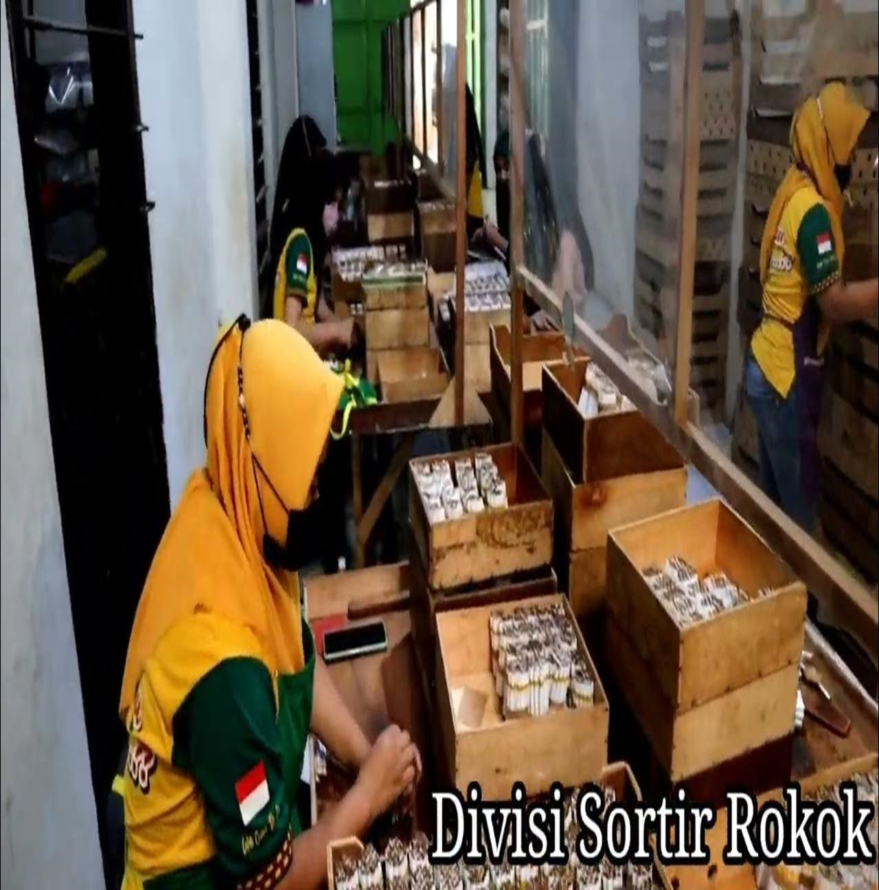

Peta Industri
Menyajikan informasi persebaran Industri berdasarkan kategorinya.
Industri Populer
Berikut merupakan 3 industri besar di Kabupaten Nganjuk.
-
PT. Kharisma Baru Indonesia
PT. Kharisma Baru Indonesia adalah sebuah perusahaan yang berfokus pada produksi sepatu. Pabrik perusahaan ini berlokasi di dusun Morobau, yang merupakan salah satu dusun yang berada di Kecamatan Bagor, Kabupaten Ngankjuk. PT. Kharisma Baru Indonesia dikenal karena keunggulan dalam pembuatan berbagai jenis sepatu, memenuhi kebutuhan pasar lokal maupun ekspor. Dengan fasilitas produksi yang modern dan tenaga kerja terampil, perusahaan ini mampu menghasilkan sepatu berkualitas tinggi yang mencakup berbagai desain dan model. Lokasi pabrik di dusun Morobau memungkinkan akses yang baik ke bahan baku serta jaringan distribusi yang efektif, menjadikan PT. Kharisma Baru Indonesia sebagai salah satu pemain utama dalam sektor industri sepatu di daerah tersebut.
-
PT Gunawan Fajar
PT Gunawan Fajar Nganjuk adalah perusahaan yang bergerak dalam produksi berbagai jenis kemasan plastik. Perusahaan ini memproduksi karung plastik yang digunakan untuk mengemas produk seperti beras, kalsium, soda ash, pakan ternak, dan pupuk. Selain itu, PT Gunawan Fajar Nganjuk juga menghasilkan kain terpal yang sering digunakan dalam berbagai aplikasi, termasuk pertanian dan industri. Di samping itu, perusahaan ini memiliki lini produksi untuk sling belt, sling bag, dan jumbo bag dengan kapasitas mulai dari 500 kilogram hingga 2000 kilogram. Dengan fasilitas produksi yang modern dan tenaga kerja terampil, PT Gunawan Fajar Nganjuk memastikan produk-produk berkualitas tinggi yang dapat memenuhi kebutuhan pasar lokal maupun ekspor. Produk-produk mereka sangat beragam dan dapat mendukung berbagai sektor, termasuk agrikultur dan industri.
-

PR. Mangga Gandeng
PR. Mangga Gandeng merupakan salah satu pabrik penghasil rokok legendaris di Nganjuk, dikenal sebagai rokok murah yang menjadi andalan masyarakat setempat selama bertahun-tahun. Selama lebih dari satu dekade, rokok kretek non-filter ini telah menjadi pilihan populer bagi konsumen lokal, berkat rasa dan kualitas yang khas serta harga yang terjangkau. Meskipun banyak pilihan rokok lainnya di pasar, Mangga Gandeng tetap mempertahankan eksistensinya dengan produk kretek non-filter sebagai ciri khasnya, menjaga loyalitas pelanggannya di wilayah tersebut. Perusahaan ini dikenal karena komitmennya dalam mempertahankan tradisi produksi rokok lokal yang otentik dan mengedepankan citarasa yang sesuai dengan preferensi masyarakat Nganjuk.